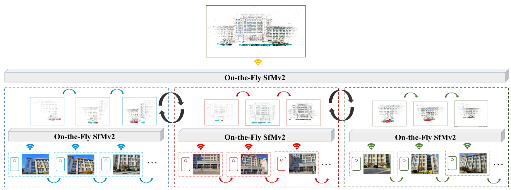
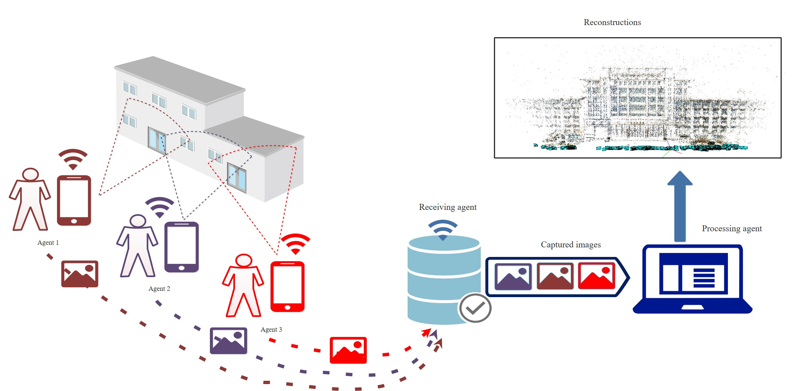
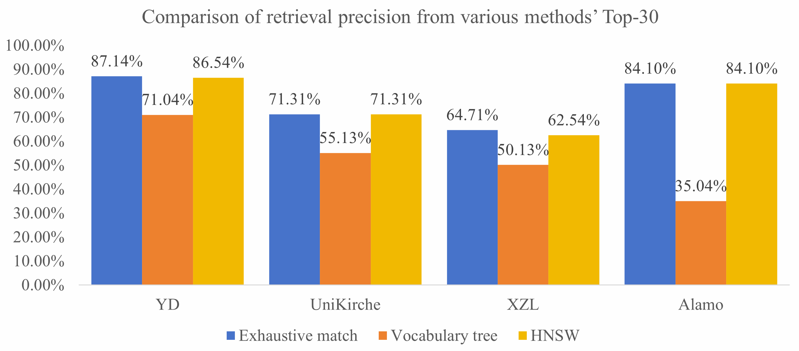
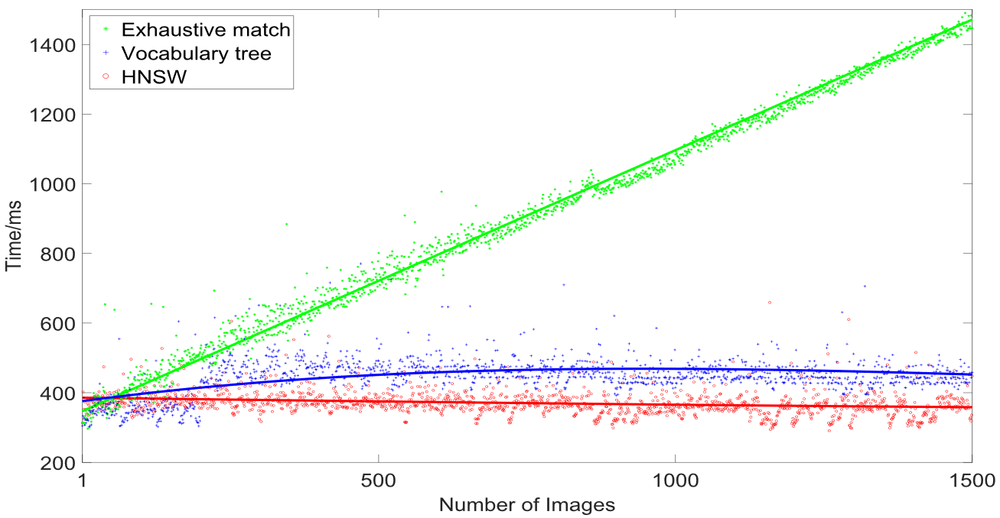
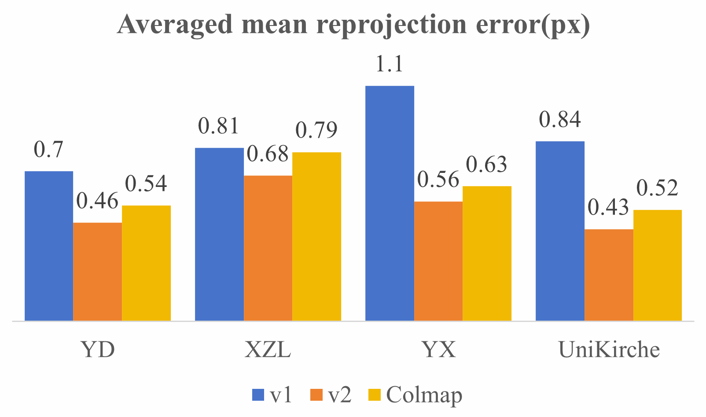
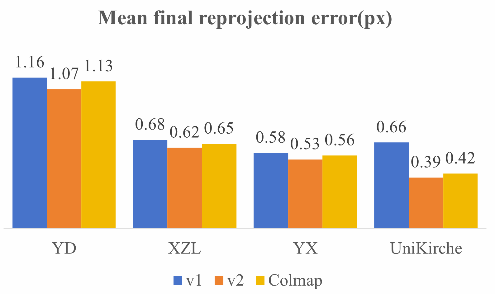
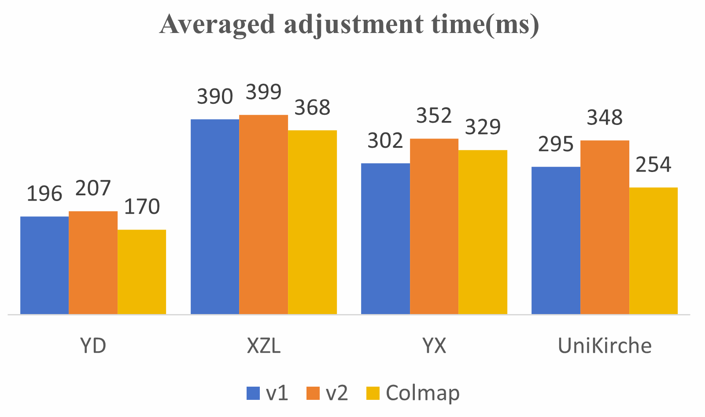
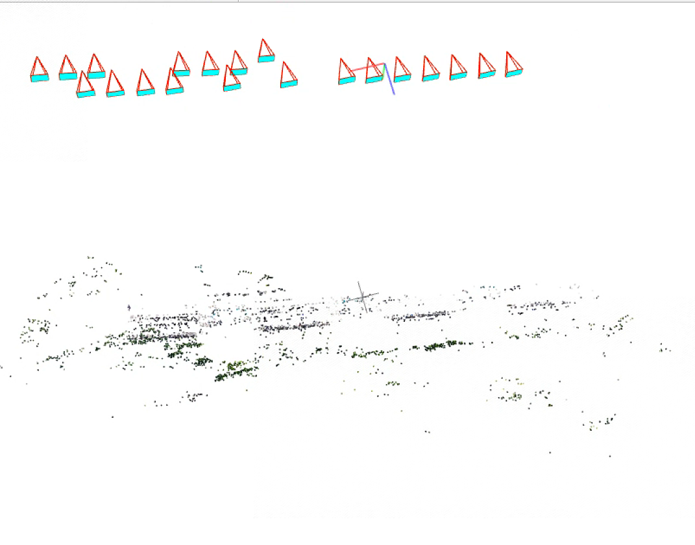
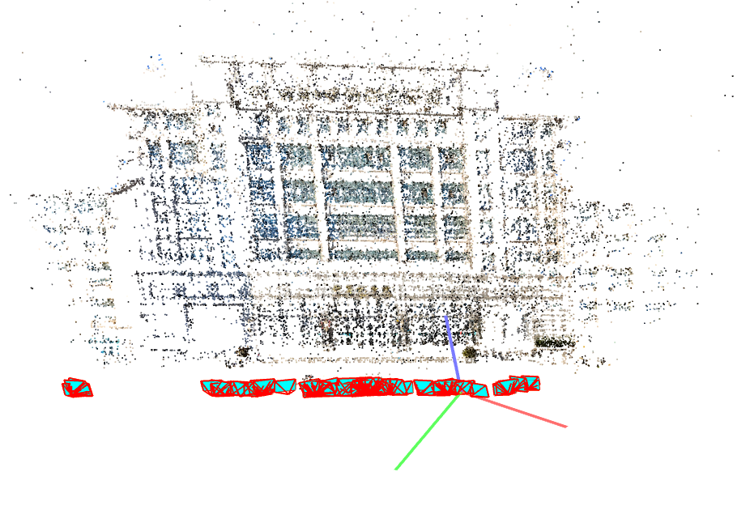
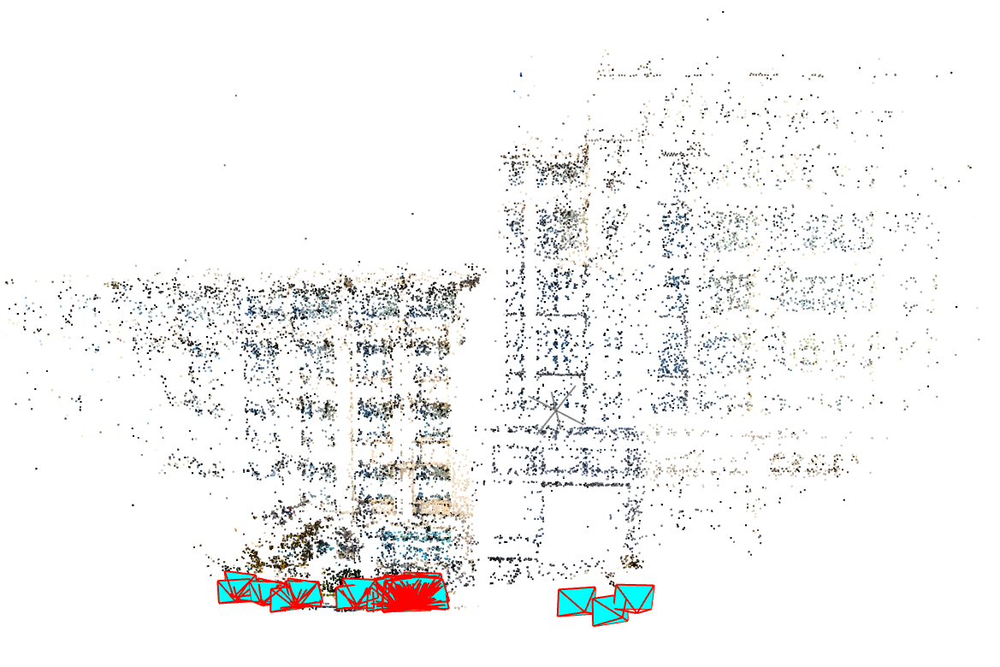

On-the-Fly SfMv2: Get Better from What You Capture
Zongqian Zhan, Rui Xia, Yifei Yu, Xin Wang*School of Geodesy and Geomatics, Wuhan University, Wuhan, P.R.China


Overview of on-the-fly SfMv2
Multi-agents on-the-fly SfMv2 platform
Abstract
Over the last decades, Structure from Motion (SfM) has been a constant research hotspot in the fields of photogrammetry,
computer vision, robotics etc., whereas, real-time performance is widely concerned, recently.
In this project, we present a new online SfM, namely on-the-fly SfMv2,
based on our previous on-the-fly SfMv1 which runs online SfM while image capturing.
The new updated version (on-the-fly SfMv2) is now with three significant improvements to get better from what you capture:
First, online image matching is further boosted by employing the Hierarchical Navigable Small World (HNSW) graphs,
which can result in more true positive overlapping image candidates are faster identified;
Second, a reasonable self-adaptive weighting strategy is employed for hierarchical local bundle adjustment, which is expected to improve the SfM results;
Finally, but most notably, we incorporate with the capability to deal with images from multiple agents,
and multiple reconstructions are seamlessly merged into a complete model when commonly registered images appear.
The comprehensive experiments demonstrate that our on-the-fly SfMv2 is able to generate better results from what is captured,
in particular, a more complete reconstruction is yielded in a more time efficient way, yet state-of-the-art SfM results are obtained.
To test our on-the-fly SfMv2, we primarily conduct following experiments: (1) online image retrieval with HNSW,
(2) adaptive hierarchical weighting for local bundle adjustment, (3) the capability for dealing with multiple agents and multiple submaps.
Then, numerical comparisons with two mutual SfM packages (Colmap and OpenMVG) and our previous on-the-fly SfM (v1)
are reported to show the accuracy of our method regarding orientation result.
All experiments are run on the machine with i9-12900K CPU and RTX3080 GPU.
1.Dataset
A total of 7 datasets of various scenarios are tested to evaluate our on-the-fly SfMv2. The details of the 7 datasets are as follows:
In our experiments, there are some free parameters needed to be selected:
Parameters
Value
Introduce
max_elements
10000
corresponding HNSW graph can store up to 10,000 data points
ef_construction
200
each element’s dynamic candidate list contains up to 200 elements during graph construction in HNSW
M
16
each data point in the graph is connected to at most 16 other points in HNSW
Top-30
30
For online sub-reconstruction, each newly fly-in image selects the Top-30 most similar images for subsequent image matching and geometric verification.
Lh
4
the maximum number of levels in the hierarchical association tree
Top-8
8
Top-8 most similar images in each level to participate in local bundle adjustment
3.Fast image retrieval based on HNSW
For fast image retrieval, we compare 3 methods: exhaustive retrieval (compares all already registered images and the newly fly-in image)
vocabulary tree and HNSW used in on-the-fly SfMv2. The results are as follows:

Here are the results for the time efficiency of retrieval as the number of images changes, based on the Alamo dataset.

4.Adaptive weighting local bundle adjustment
Here is a comparison of the performance of bundle adjustment between the current system (v2), the previous system (v1), and Colmap.



5.Sub-reconstructions
Capability for multiple agents and sub-reconstructions of on-the-fly SfMv2(compared with on-the-fly SfMv1) are shown as follow:
Complete reconstruction by v2
Sub-reconstructions by v1
Reconstruction of XZL
Reconstruction of UniKirche

Reconstruction of YD


Reconstruction of JYYL
Acknowledgement
This work was jointly supported by the National Natural Science Foundation of China (Grant No. 61871295, 42301507),
Natural Science Foundation of Hubei Province, China (No. 2022CFB727) and ISPRS Initiatives 2023.
Reference
Michelini, M., Mayer, H., 2020. Structure from motion for complex image sets. ISPRS J.Photogramm. Remote Sens. 166, 140–152.
Wilson, K., Snavely, N., 2014. Robust global translations with 1DSFM. In: Proceedings of the European Conference on Computer Vision (ECCV). Springer, pp. 61–75.
About us
If you have any questions or advice, you can contact us via following address:
zqzhan@sgg.whu.edu.cn, Zongqian Zhan, WuHan University